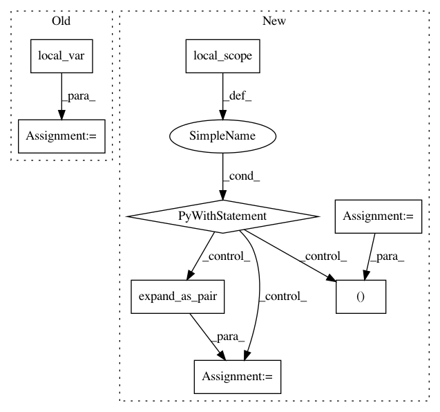

af61e2fbb45c53df3ff2a91f81a2026a8f66d90d,python/dgl/nn/pytorch/conv/gmmconv.py,GMMConv,forward,#GMMConv#Any#Any#Any#,89
Before Change
The output feature of shape :math:`(N, D_{out})` where :math:`D_{out}`
is the output feature size.
graph = graph.local_var()
graph.ndata["h"] = self.fc(feat).view(-1, self._n_kernels, self._out_feats)
E = graph.number_of_edges()
// compute gaussian weight
gaussian = -0.5 * ((pseudo.view(E, 1, self._dim) -
After Change
The output feature of shape :math:`(N, D_{out})` where :math:`D_{out}`
is the output feature size.
with graph.local_scope():
feat_src, feat_dst = expand_as_pair(feat)
graph.srcdata["h"] = self.fc(feat_src).view(-1, self._n_kernels, self._out_feats)
E = graph.number_of_edges()
// compute gaussian weight
gaussian = -0.5 * ((pseudo.view(E, 1, self._dim) -
self.mu.view(1, self._n_kernels, self._dim)) ** 2)
gaussian = gaussian * (self.inv_sigma.view(1, self._n_kernels, self._dim) ** 2)
gaussian = th.exp(gaussian.sum(dim=-1, keepdim=True)) // (E, K, 1)
graph.edata["w"] = gaussian
graph.update_all(fn.u_mul_e("h", "w", "m"), self._reducer("m", "h"))
rst = graph.dstdata["h"].sum(1)
// residual connection
if self.res_fc is not None:
rst = rst + self.res_fc(feat_dst)
// bias
if self.bias is not None:
rst = rst + self.bias
return rst
In pattern: SUPERPATTERN
Frequency: 3
Non-data size: 8
Instances
Project Name: dmlc/dgl
Commit Name: af61e2fbb45c53df3ff2a91f81a2026a8f66d90d
Time: 2020-03-29
Author: expye@outlook.com
File Name: python/dgl/nn/pytorch/conv/gmmconv.py
Class Name: GMMConv
Method Name: forward
Project Name: dmlc/dgl
Commit Name: af61e2fbb45c53df3ff2a91f81a2026a8f66d90d
Time: 2020-03-29
Author: expye@outlook.com
File Name: python/dgl/nn/mxnet/conv/nnconv.py
Class Name: NNConv
Method Name: forward
Project Name: dmlc/dgl
Commit Name: af61e2fbb45c53df3ff2a91f81a2026a8f66d90d
Time: 2020-03-29
Author: expye@outlook.com
File Name: python/dgl/nn/pytorch/conv/nnconv.py
Class Name: NNConv
Method Name: forward